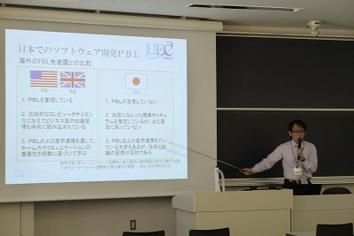

Welcome
未来のＩＴ教育に関する研究をしている木崎悟のページです
プログラミング、モバイルアプリケーション開発などに興味があります

業績一覧
論文誌
- 酒瀬川康孝，木崎悟，川木富美子，須澤秀人，土屋陽介，加藤由花，中鉢欣秀： ロボットサービスの国際開発プロジェクトモデルにおけるアジャイル型ソフトウェア開発プロセスScrumの適用, 産業技術大学院大学紀要 No.7, pp.59-66, 2013-12.
解説記事
- 木崎悟, 中鉢欣秀： 国際PBL実施によるプロジェクトマネージャ育成環境の構築, プロジェクトマネジメント学会誌 14(2), pp.15-20, 2012-04-15. link
国際会議
- Satoru Kizaki, Yasuyuki Tahara and Akihiko Ohsuga： Software development PBL focusing on communication using Scrum, International Conference on Software Engineering Research, Management and Applications (SERA2014), 2014-09-03. pdf
- Satoru Kizaki, Yoshihide Cyubachi： Improvement of collaborative work on software development PBL in a distributed environment, Invitation to 3rd International PBL Symposium 2012, 2012-03-08. pdf
国内会議（査読有）
- 木崎悟: 情報系専門学校におけるアクティブラーニングを導入した発想力育成教育の取組み, 情報教育シンポジウム2016論文集, pp.182-189, 2016-08-15. link 発表資料
- 木崎悟, 田原康之, 大須賀昭彦： Scrumに基づきコミュニケーションを重視したソフトウェア開発PBLの実践, ソフトウェアエンジニアリングシンポジウム2013論文集, pp.1-6, 2013-09-02. link
- 木崎悟, 成田亮, 丸山英通, 土屋陽介, 成田雅彦, 中鉢欣秀： 国際PBLにおける的確な仕様の伝達とチケット駆動による開発作業の効率化, ソフトウェアエンジニアリングシンポジウム2011論文集, pp.1-6, 2011-09-06. link
国内会議（査読なし）
- 木崎悟, 塚本裕司, 田嶋益光, 西部俊孝, 有留由記: 職種研究ワークショップを通したＩＴ人材育成の取組み, 情報システム学会第14回全国大会・研究発表大会, 2018-12-01. pdf 発表資料
- 木崎悟: iOSアプリケーション開発をテーマとした授業展開の考察, 2017 PC CONFERENCE，論文集, pp.329-332, 2017-08-07. pdf
- 木崎悟: Androidアプリケーション開発技術者教育における学生のつまずき箇所の分析, 電子情報通信学会教育工学研究会（ＥＴ），信学技報, vol.116, no.314, ET2016-62, pp.41-46, 2016年11月.
- 木崎悟, 田原康之, 大須賀昭彦：ソフトウェア開発 PBLにおけるアイデアソンを利用した要求獲得・分析手法の提案，ソフトウェアエンジニアリングシンポジウム2016論文集,pp.233-236, 2016-08-24. link 発表資料
- 須澤秀人，酒瀬川康孝，川木富美子，木崎悟, 土屋陽介, 酒森潔，中鉢欣秀: 大学生を対象としたScrum型ソフトウェア開発教育の実践に関する考察, プロジェクトマネジメント学会2013年度春季研究発表大会，2013-03-14.
- 木崎悟, 田原康之, 大須賀昭彦: アジャイル型ソフトウェア開発PBLにおけるCCBRを拡張したコードレビュー支援環境の提案, 情報処理学会研究報告. コンピュータと教育研究会報告 2013-CE-118, pp.1-8, 2013-02-01. link
- 木崎悟, 大野貴行, 小松真, 馬場匠見, 室山大輔, 中鉢欣秀, 土屋陽介, 加藤由花: Androidを利用したロボット遠隔操作システムの構築, 第30回 日本ロボット学会 学術講演会, 2012-09-19. pdf movie
- 木崎悟, 増永純也, 河口友木, 土屋陽介, 中鉢欣秀： 国際的PBLと国内で実施されるPBLの「見える化」による分析と考察, プロジェクトマネジメント学会2012年度春季研究発表大会, 2012-03-15. pdf
- 木崎悟, 丸山英通, 土屋陽介, 中鉢欣秀： ソフトウェア開発PBLへのチケット駆動開発の適用による共同作業の改善, プロジェクトマネジメント学会2011年度秋季研究発表大会, 2011-09-16. pdf
- 木崎悟, 成田亮, 丸山英通, 中鉢欣秀：グローバルなソフトウェア開発におけるマネジメント手法, 情報処理学会研究報告. ソフトウェア工学研究会報告 2011-SE-172(1), pp.1-8, 2011-05-10. link
- 木崎悟, 成田亮, 丸山英通, 長尾雄行, 中鉢欣秀： GTD初心者のタスク管理を支援するタスクコンシェルジュの開発, 情報科学技術フォーラム講演論文集 9(4), pp.531-532, 2010-08-20. link
国内会議（ポスター発表）
国内会議（ワークショップ）
- 木崎悟： ソフトウェア開発PBLにおける要求獲得フェーズの変化, ソフトウェアエンジニアリングシンポジウム2016ワークショップ, 2016-08-31.
情報システム教育コンテスト(ISECON)
執筆活動
- 木崎悟, 大学でも使われるスクラム ～PBLによるスクラム実践(2)，link, ManasLink ONLINE, 2013-08-12.
- 木崎悟, 大学でも使われるスクラム ～PBLによるスクラム実践，link, ManasLink ONLINE, 2013-01-13.